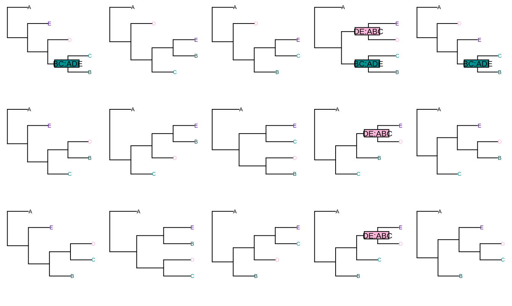

To understand the information-based metrics implemented in TreeDist, it is useful to recall some basic concepts of information theory. The examples below ape MacKay (2003).
Bits
Information is usually measured in bits. One bit is the amount of information revealed by tossing a fair coin: to record the outcome of a coin toss, I must record either a H or a T, and with each of the two symbols equally likely, there is no way to compress the results of multiple tosses.
The amount of information required to encode a particular statement is a function of the likelihood of the outcome.
If all outcomes are equally likely, then the information content (entropy) of an outcome is \(-log_2(p)\). Thus, because the probability of a “heads” outcome in our fair coin toss is \(1/2\), its information content is \(-\log_2(\frac{1}{2})\) = 1 bit. If I roll a fair die, then there is a \(1/6\) chance of rolling a two, and the information content of this roll is \(-\log_2(\frac{1}{6})\) = 2.58 bits. If I pick one six-terminal tree at random from the 105 unrooted 6-terminal topologies, then the information content of this outcome is \(-\log_2(\frac{1}{105})\) = 6.71 bits.
Entropies and information
Consider a case in which Jane rolls a dice, and offers to truthfully answer two questions:
A: “Is the roll even?”.
- Two equally-possible outcomes: yes or no
- Information content (entropy): \(H(A) = -\log_2(\frac{1}{2})\) = 1 bit.
B: “Is the roll greater than 3?”
- Two equally-possible outcomes: yes or no
- Information content (entropy): \(H(B) = -\log_2(\frac{1}{2})\) = 1 bit.
The joint entropy of A and B is the entropy of the association matrix that considers each possible outcome:
| A: odd | A: even | |
|---|---|---|
| B: ≤ 3 | \(p = \frac{2}{6}\) (1, 3) | \(p = \frac{1}{6}\) (2) |
| B: > 3 | \(p = \frac{1}{6}\) (5) | \(p = \frac{2}{6}\) (4, 6) |
Entropy is calculated by \(\sum{p \log_2(p)}\). So the joint entropy is:
\(\begin{aligned} H(A, B) = \frac{2}{3}\log_2\frac{2}{3} + \frac{1}{3}\log_2\frac{1}{3} + \frac{1}{3}\log_2\frac{1}{3} + \frac{2}{3}\log_2\frac{2}{3} = 1.84 \textrm{ bits} \end{aligned}\)
Note that this less than the 2.58 bits we require to determine the exact value of the roll: knowlege of A and B is not guaranteed to be sufficient to unambiguously identify the outcome.
The mutual information between A and B describes how much knowledge of A reduces our uncertainty in B.
So if we learn that A is ‘even’, we become a little more confident that B is ‘greater than three’.
The mutual information \(I(A;B)\) corresponds to the sum of the individual entropies, minus the joint entropy:
\[\begin{aligned} I(A;B) = H(A) + H(B) - H(A, B) \end{aligned}\]The variation of information is the information that A and B do not have in common:
\[\begin{aligned} VoI(A, B) = H(A, B) - I(A;B) \end{aligned}\]
Phylogenetic information
When it comes to comparing partitions (Smith, 2019), we can imagine Jane selecting one ‘true tree’ from the universe of bifurcating n-tip trees, then telling us two partitions that occur in that tree.
Let’s consider the two splits BC:ADE and DE:ABC in the universe of 5-tip trees.

The phylogenetic information content (sensu Steel & Penny, 2006) of each partition corresponds to the logarithm of the proportion of bifurcating n-tip trees that include that partition.
-
H(
BC:ADE) = \(-\log_2(\frac{3}{15})\) -
H(
DE:ABC) = \(-\log_2(\frac{3}{15})\)
The mutual phylogenetic information corresponds to the logarithm of the proportion of trees that include both.
-
I(
BC:ADE;DE:ABC) = \(-\log_2(\frac{1}{15})\)
The variation of information is the logarithm of the proportion of trees that contain one partition, but not the other.
-
VoI(
BC:ADE;DE:ABC) = \(-\log_2(\frac{5}{15})\)
References
MacKay, D. J. C. (2003). Information theory, inference, and learning algorithms. Cambridge: Cambridge University Press. Retrieved from https://www.inference.org.uk/itprnn/book.pdf
Smith, M. R. (2019). Information theoretic generalized robinson-foulds metrics for comparing phylogenetic trees. Forthcoming.
Steel, M. A., & Penny, D. (2006). Maximum parsimony and the phylogenetic information in multistate characters. In V. A. Albert (Ed.), Parsimony, phylogeny, and genomics (pp. 163–178). Oxford: Oxford University Press.